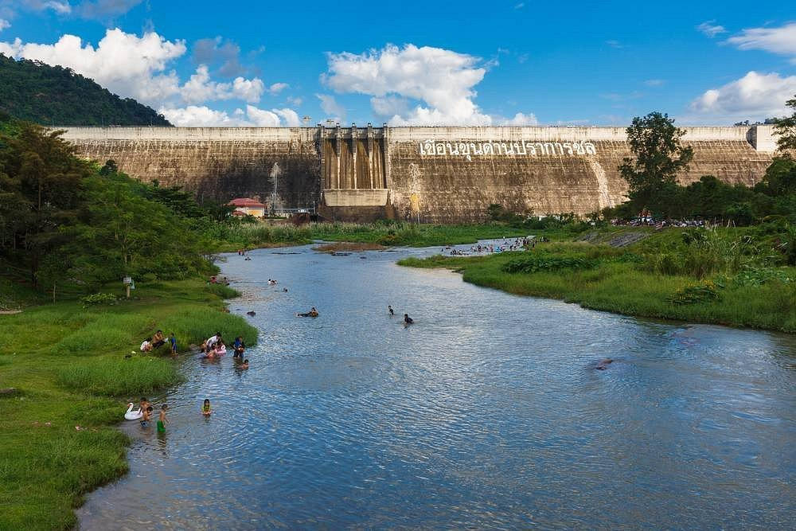

The Province
Just 100 km east of Bangkok, Nakhon Nayok is a province of dramatic contrasts — ancient dams and cascading waterfalls, UNESCO-listed national parks and fertile valleys. Eco Eyes Village places you in the heart of it all.

Natural Wonder
The crown jewel of Nakhon Nayok, Sarika is a magnificent multi-tiered waterfall cascading through dense tropical jungle. At its peak (June–October), the falls are a thunderous display of nature's power.
Swim in natural pools, picnic on the rocks, or hike the trails above the falls for panoramic views of the valley. An easy half-day trip from Eco Eyes Village.
UNESCO World Heritage
One of Asia's finest national parks, Khao Yai is a UNESCO World Heritage Site protecting over 2,000 km² of tropical forest. Home to elephants, gaur, tigers, gibbons, and over 300 bird species.
Self-drive or join a guided night safari to spot nocturnal wildlife. The park entrance is 45 minutes from Eco Eyes and can be combined with a visit for an unforgettable day.


Dramatic Cascade
Deep within Khao Yai National Park, Haew Narok (Hell's Chasm) plunges 150 metres over three dramatic tiers through pristine jungle. It is one of the most photographed waterfalls in Thailand.
Elephants are frequently spotted bathing near the falls — a truly wild, once-in-a-lifetime experience. Best visited in the cooler months (November–February).
Engineering Heritage
One of the longest roller-compacted concrete dams in the world, Khun Dan Dam is an impressive feat of engineering set against a dramatic mountain backdrop. The reservoir and surrounding landscape are strikingly beautiful.
Walk across the dam crest for panoramic views of the Nakhon Nayok valley and mountains. Sunrise visits offer the best photography conditions and cooler temperatures.

Getting Here
By Car
~1.5h
Via Highway 305 from Bangkok. Scenic drive through green hills.
By Bus
~2h
Buses from Ekkamai or Mo Chit terminal direct to Nakhon Nayok.
GPS Address
188
188 Moo 9, Sarika, Nakhon Nayok 26000. Search "Eco Eyes Village" on Google Maps.